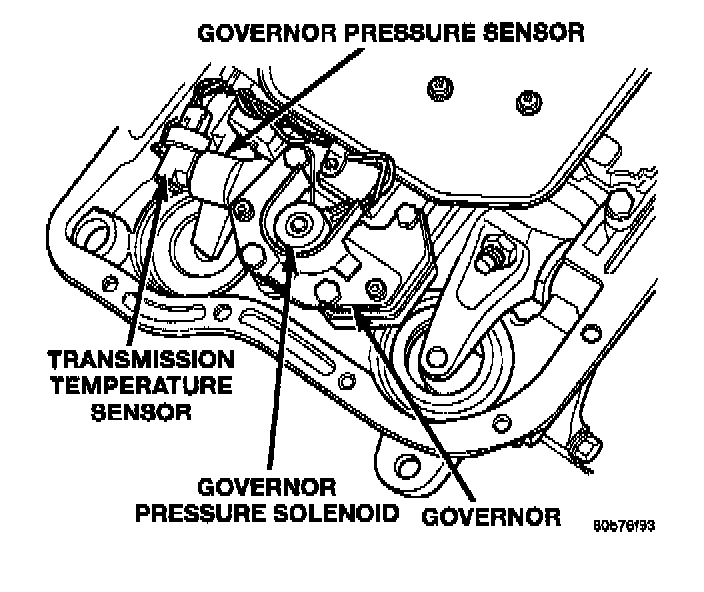

Transmission Temperature Sensor/Switch: Locations
Governor Pressure Sensor, Transmission Temperature Sensor, Governor Pressure Solenoid, Governor:

The transmission temperature sensor is located in the transmission solenoid assembly in the valve body. The governor pressure sender and the transmission fluid temperature thermistor are separate sensors in the same component. This component is attached to the governor body in the solenoid assembly of the valve body.